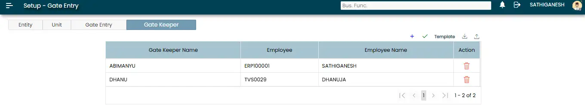

<div data-category="Gate Entry" data-title="Gate Keeper" data-updated="January 23, 2026" data-contributors="RoadmapIT" data-breadcrumb="Home,Gate Entry,Gate Keeper">
  <div class="page-content">
    <h5>Gate Keeper</h5>
    <p>A gatekeeper is a person responsible for controlling access to a facility or premises. They are stationed at the entrance (gate) and their primary duties include visitor management, material handling, and ensure that authorized personnel, vehicles, and materials are allowed to enter the premises.</p>
    <p>This screen is used to define the gatekeeper of the organization.</p>

    <h5>Navigation path:</h5>
    <p class="fs-6">Supply Chain \ Gate Entry \ Setup \ Setup – Gate Entry \ Gate Keeper</p>

    
    <ul style="list-style-type: none; align-content: center">
      <li class="mouse-icon">Click <i class="bi bi-plus fs-4 mx-2 text-primary"></i> to add</li>
      <li class="mouse-icon">Enter the Gate Keeper name</li>
      <li class="mouse-icon">Select Employee</li>
      <li class="mouse-icon">Click <i class="bi bi-check-lg fs-4 mx-1 text-success"></i> to Save</li>
      <li class="mouse-icon">
        Click
        <i class="bi bi-download fs-5 mx-1 text-muted"></i>
        button to download the details in preferred format such as CSV, HTML, PDF, and Excel
      </li>
      <li class="mouse-icon">Click Template button to download the template in excel format for mass upload</li>
      <li class="mouse-icon">
        Click
        <i class="bi bi-upload fs-5 mx-1 text-muted"></i>
        button to upload the template
      </li>
    </ul>
  </div>
</div>
